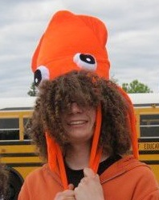
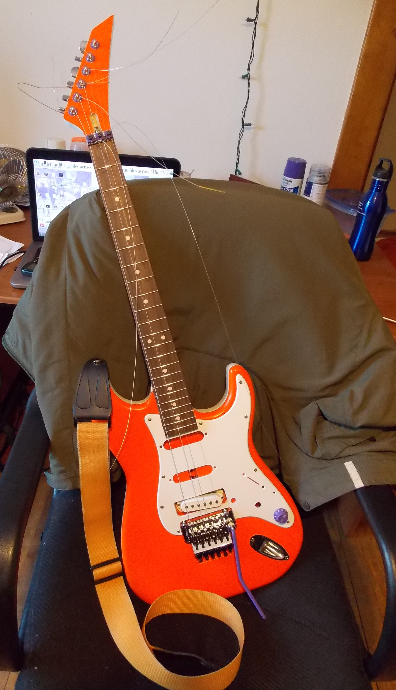
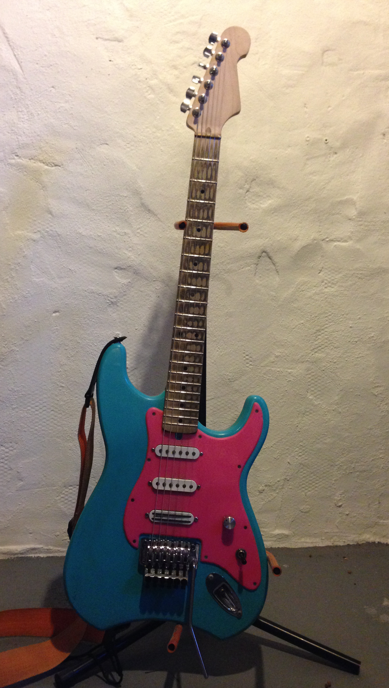
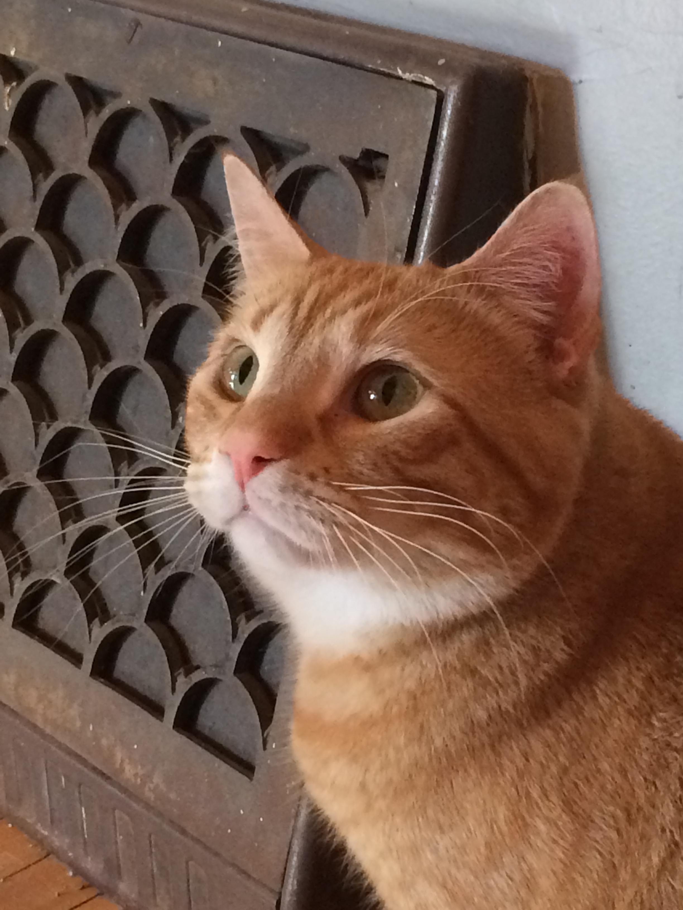
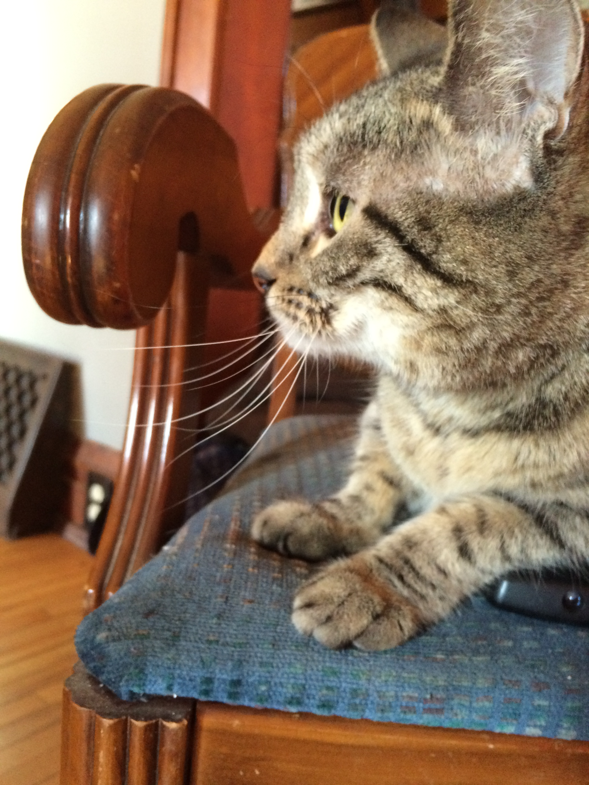
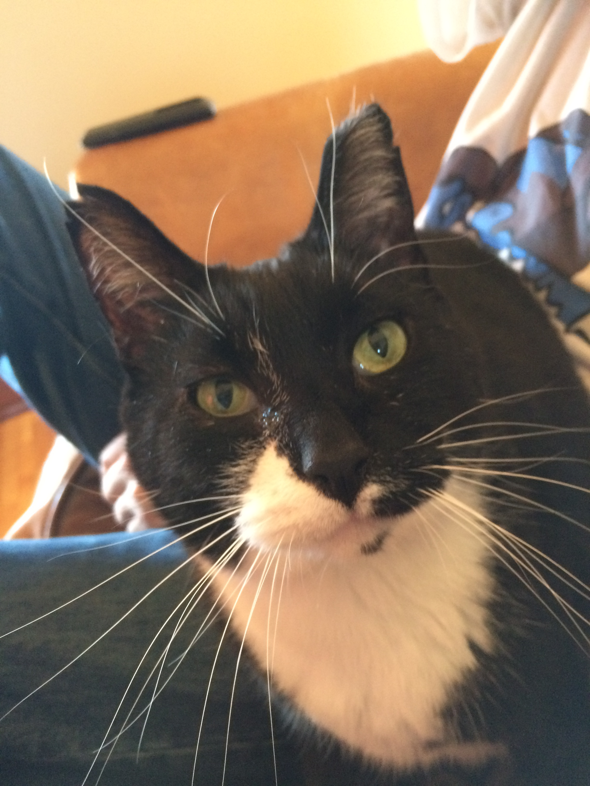

Andrew Hansen is an aspiring young programmer currently living in South Minneapolis. Growing up on computer games and sci-fi, Andrew always had nerdy interests and hobbies. After moving from Wisconsin to Saint Paul, Minnesota he continued his path through life with an education in physics and computer science at macalester College. After taking classes in programming, software development and digital electronics, Andrew set his sights on the exciting and rapidly growing field of computer programming. His completed projects include: Digital Audio FX, "Daily Feast" Android application and a Wikipedia Markov Chain generator. Besides coding, Andrew enjoys playing and building electric guitars and has an undying love for animals.

ROSALINE
--------
Body: Basswood
Neck: Maple/Rosewood
Pickup: DiMarzio
Rosaline was my first electric guitar build. This guitar features a one-piece Basswood body and Floyd-Rose locking nut and bridge for heightened tuning stability. It also features a low-profile Maple/Rosewood neck with stainless steel frets built by the Warmoth Custom Shop that is great for fast playing. This guitar's tonality is in the midrange with a bright attack and sounds best with a warm distortion. This guitar was painted in 'Power Orange'.

PENELOPE
--------
Body: Mahogany
Neck: Maple
Pickups: DiMarzio
This pink and turquoise guitar was my second build and features a number of improvements from the first. This guitar features three pickups, two of which are wired out of phase to give an octave effect with no active circuitry. Penelope has a wider U shaped neck profile that is similar to older fender guitars. Her tonality is also in the midrange, but has a duller, bassy attack on the low strings. This guitar is great for jazz on a clean setting, and great for rock when using moderate distortion.

Worm is an orange Bengal with a cheeky personality and an adorable meow. Worm has no issue sleeping for most of the day, given he is lying on his favorite blanket or someone's coat that he pulled down off the back of a chair. When not snoozing, he loves chasing plastic bags for some reason, and has no problem knocking over the trash bin in the middle of the night to get at them! Although sometimes shy and devious, Worm has a big heart and loves to cuddle once he gets to know you. Until then, he is content looking for ladybugs in the house which seem to intrigue him. Worm's vocal meow sounds like he is calling his own name and is often heard at late at night once everyone has gone to bed and he gets lonely.

Chet is a small American Shorthair tabby with a mysterious past and a quick temper. Most likely the runt of her litter, Chet was rescued from the streets as a small kitten. Even four years later, she remains only a few pounds. Although mostly hesitant and reclusive, Chet will every once in a while come out of one of her hiding spots and interact with humans, especially when there are visitors over! Known to disappear for days at a time, Chet is a very secretive animal and can often hide in plain sight. Her size and personality notwithstanding, Chet is the clear alpha cat of the house and often puts Worm in his place! Despite her tempermentality towards her owners and the other cats, Chet does have a sweet side that is sometimes overlooked.

Moo is a beautiful and friendly tuxedo alley-cat who loves nothing more than human companionship. Moo has a constantly curious and complaisant attitude and not an aggressive bone in his body. A few seconds after walking up or down the stairs, the pitter-patter of Moo's paws are heard as he follows your lead. Moo loves to play and is drawn to anything reminiscent of a string: headphones cords, guitar strings, and shoelaces are favorites of his. In the absence of these objects, Moo has no trouble finding a substitute such as a plastic cap or pencil to knock off the table and bat around on the floor, sometimes with Worm. When Moo is in your presence, he always looks directly into your eyes - a strange behaviour for a cat.